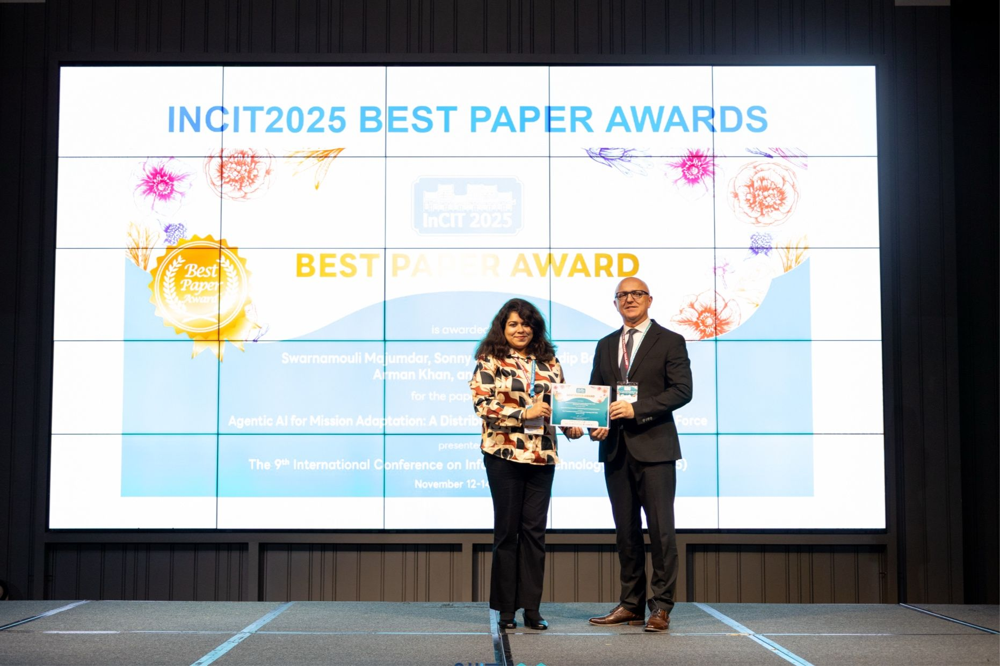

2023 — Present
Academic
Doctoral Researcher
Concordia University · Montréal, Canada
Research in machine learning, adaptive planning, and trustworthy decision support for autonomous and connected public-safety systems.
I am an AI researcher, technologist, and founder working where intelligent systems meet complex human challenges. My path has moved through software engineering, industry data science, autonomous vehicles, research, and public-safety innovation.
Connect on LinkedInI am pursuing my Ph.D. in Information Systems Engineering at Concordia University in Montréal, with research in artificial intelligence, machine learning, and autonomous decision support. My interests include reinforcement learning, intelligent transportation systems, human-supervised UAVs, and reliable software for critical settings.
As Founder and CEO of Zenext AI, I lead R&D focused on hands-free AI interfaces and connected technologies for first responders. Earlier roles with Motional, Cummins, State Street, System Soft Technologies, and other organizations shaped how I approach data, software, mobility, and cross-disciplinary problem solving. I aim to bridge research with technology that is understandable, testable, and socially relevant.
My professional path spans software engineering, industry analytics, autonomous mobility, and interdisciplinary research.
Concordia University · Montréal, Canada
Research in machine learning, adaptive planning, and trustworthy decision support for autonomous and connected public-safety systems.
Zenext AI · Canada / United States
Lead research and development across voice-enabled AI, autonomous systems, emergency-response software, human–AI interaction, and cross-sector technology collaborations.
System Soft Technologies · United States
Worked on software requirements, SQL modeling, testing and analytics delivery across multidisciplinary engineering teams.
State Street Corporation · Boston, United States
Contributed to analytics products, validation, risk reporting, data pipelines, and cross-functional technical planning.
Motional AD · Boston, United States
Partnered with autonomous-vehicle testing, safety, and data teams on metrics, reporting quality and evidence-led decisions.
Cummins Inc. · United States
Developed engineering analytics and dashboards, automating reporting to support product and operational decision-making.
Cognizant · CPS Global Technologies · System Soft Technologies · India / United States
Experience in programming, statistical analysis, software requirements, automation, visualization, and data-driven business systems.
Concordia University
Montréal, Canada · Expected completion: 2027University of Massachusetts Lowell
TransferredIndiana University Indianapolis
Graduate study in data science and analyticsAra Institute of Canterbury
Project and operations managementWest Bengal University of Technology
Undergraduate degree in information technologyIEEE UEMCON, CCNCPS, and InCIT
IEEE International Conference on Consumer Electronics (ICCE)
Zenext AI selected among seven teams for NIST/PSCR accelerator
NIST/PSCR Tech to Protect Challenge
AT&T FirstNet Hackathon
Receiving the Best Paper Award at InCIT 2025 for research on mission adaptation and distributed cognition.
View award and photographs ↗
Introductory programming, data structures and algorithms, database systems, software engineering, AI, machine learning, applied data science, IoT, human–computer interaction, and responsible computing.
My preferred approach combines progressive hands-on exercises, reproducible experiments, collaborative projects, and examples drawn from real systems.
Research collaboration, teaching, technical speaking, interdisciplinary partnerships, and public-safety R&D.
swarna1988.19@gmail.com